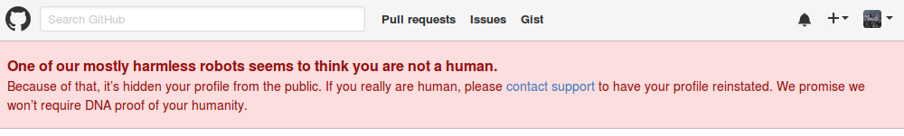

Human, human, human, human,
Daft Punk — Human After All
Human, human, human, human,
Human, human, human, human,
Human, human, human after all.
I logged into GitHub this week and saw an unusual message:

One of our mostly harmless robots seems to think you are not a human.
Because of that, it's hidden your profile from the public. If you really are human, please contact support to have your profile reinstated. We promise we won't require DNA proof of your humanity.
Putting aside the irony of GitHub detecting bots with their own automated systems, one short email later, it was politely resolved in ten minutes by GitHub's support team, who decided I was human after all.1
What might have caused it?
Perhaps creating several similar looking repositories (albeit with different code) in a relatively short space of time. These contain example code to access the API that we offer at work. Maybe it's because the commits looked similar, maybe because the commit messages or the commit content contained a URL. Who can say?
Why is this not ideal?
Despite the quick resolution, the way this situation is handled might be flawed.
First, though the warning was omnipresent, large and red, it didn't describe the full nature of the problem. The phrase "hidden your profile from the public" to me just implied that GitHub had hidden my profile page.
Seemingly, I could still do and access everything as normal, albeit with a warning on every page, so I didn't fully appreciate the consequences.
From reading around, what apparently happens is that any repository that's under your profile becomes a nice 404 error to anyone who's not you. I didn't check this firsthand (because I wasn't under any impression that anything had really changed with my account). If this is true, that might create some issues which I'll discuss later in this post.2
Second, they didn't send me any email warning at all, unless it went into my junk mail. I only noticed because I logged into my account and there was a big red banner at the top of every screen. What if I didn't log into GitHub at all for a while?
Finally, I assume that the process happens instantly when their system considers you a bot. There's no grace period where you can confirm your identity, before they hide your profile publically. It just gets hidden and, what I suspect happens is, the first you know of it is when it has been hidden.
How might this cause problems?
Let's say that you have a very high profile project under your GitHub account that lots of people rely on. Let's also suppose that this is the definitive installation source.
At least for Go projects, this may be true: Go developers will often host projects on GitHub and that's the official source. Now, for whatever reason, your account gets labelled as a bot, and perhaps all of a sudden, your software is unavailable to anyone else, potentially breaking their software. If this was a major problem, I'd imagine this would get fixed pretty promptly, but still, it would be an inconvenience, and a baffling one for anyone encountering it.
Again, I'm prepared to be corrected on this. If this isn't how things work, that's great. Maybe popular accounts, e.g. those with lots of followers, or owning projects with lots of stars, have some protection against this before their accounts are tagged in this way?
If there is a possibility that this could actually happen though, then if there was some kind of short delay and an email warning before labelling your account as "not human", at least you'd have a chance to fix up your account first, without your account temporarily becoming a Ghost of GitHub Past.
What's the relevance to other online services?
This kind of situation isn't restricted specifically to GitHub. It does illustrate features of online services that are ever present, but remain latent until you encounter them. These are likely some variant of:
-
the site owners can modify your account's privileges, disable your account, or even delete your account and all its content without warning.
-
this might happen without any way of you appealing the decision; that's entirely down to the policies of the site.
-
even if you behave in line with the site's terms and conditions, you may inadvertently break "rules" that the site owners don't even realise they have in place, but are instead derived by some automated machine learning system. In very much the same way that you might have experienced: has your bank ever suddenly prevented you from making a payment until you confirm the transaction? All of a sudden, you find yourself in the midst of some real life version of Mao where you lose out because you don't even know what you did wrong.
More on GitHub
OK, diversion aside, let's go back to speculating about GitHub accounts. Let's go further than hiding my account for a short time. What if my GitHub account was disabled entirely either for some period of time, or even deleted permanently?
A considerable amount of my work is done via GitHub. Using an alternative would be a major inconvenience. With my employer, I'd have to figure out some solution to resolving it, enabling me to contribute again. That might mean moving to a competitor, or some self-hosted solution, or that I submit patches instead. But who'd want to deal with the overhead of working with patches from one developer when everyone else is capable of just pushing straight to GitHub?
Even if you're just coding in your free time, this is also a problem if you want to assist with any of the numerous open source projects that take contributions directly via GitHub.
Another side issue if you're not rigorous with backups, you won't have access to the repositories that you didn't have locally. However, GitHub do state in their terms that they will attempt to "make a reasonable effort to provide the affected account owner with a copy of their account contents upon request".
GitHub's terms do state you can only have one account. It's less clear whether having an account disabled precludes you from signing up again. Nonetheless, they do say that they can "refuse any and all current or future use of the Service, or any other GitHub service, for any reason at any time". So it may be that any future accounts you create may well be subject to being disabled due to your prior history.
The major online services are ubiquitous and have transformed the way many people worldwide interact and work. It's worth remembering that your continued ability to access them is never guaranteed. If you lose access to services you use for leisure, it may well be frustrating. If you're relying on them for work, you may find yourself dealing with big problems that you very quickly need to solve.
With GitHub, I'm still not sure what my solution would be for work if GitHub permanently kicked me out from their site. As much as GitHub, historically at least, do seem to be on the side of developers, and I've very few complaints about the site,3 it's still slightly concerning that this gives them a position of power.
-
Incidentally, it's weird thinking that it's more than possible that to some listeners these days, Daft Punk may well only be known as "that robot band that did some songs with Pharrell", despite having been around for more than twenty years.
If, for whatever reason, you haven't heard the Human After All album, I'd go straight to Alive 2007 where those tracks work a lot better in context, rather than the isolation of individually being played out; they're closer to the realm of DJ tools that work magnificently live. ↩
-
Some other thoughts: I have no idea what happens to open pull requests, are they still visible? Can you create new pull requests? What happens to organisations where you're the sole member? What happens to GitHub pages under your profile? Again, no idea. ↩
-
Out of the main competitors, I've used Bitbucket considerably, and prefer GitHub, although Bitbucket is better in that personal private repositories don't require you to pay. The little use I've had of GitLab I've found very confusing. (Admittedly, that confusion may not have been helped by not being in charge of the GitLab group I was contributing to, so it was awkward trying to get permissions configured.) ↩